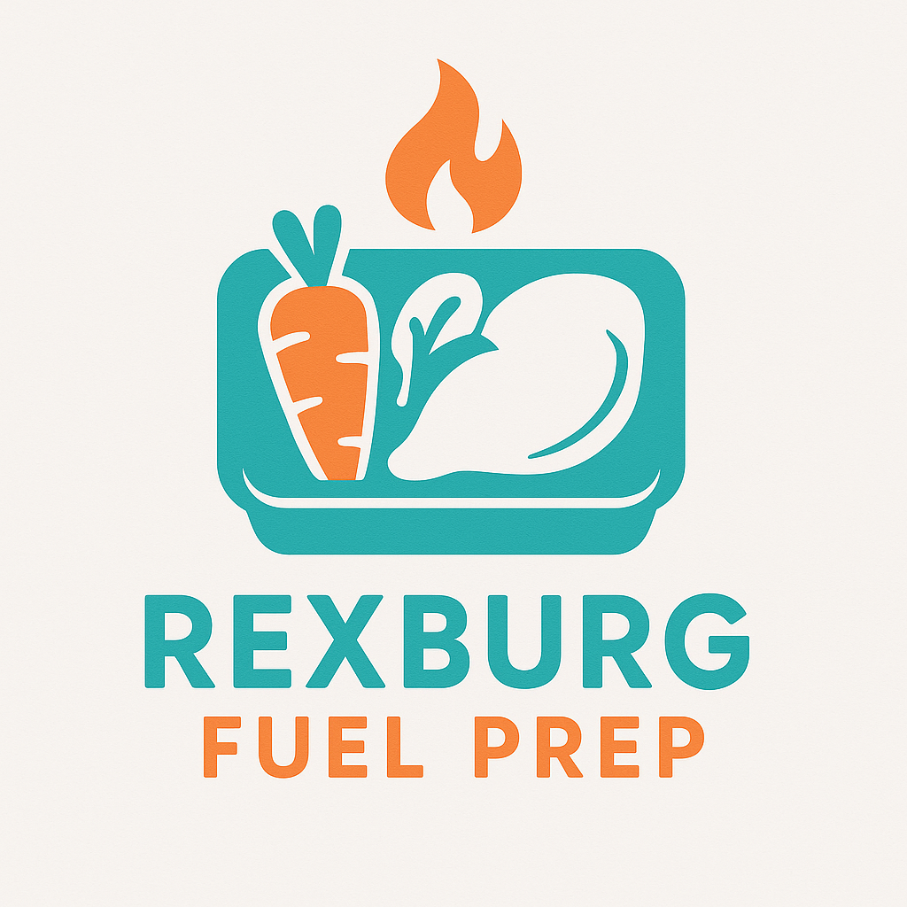

Overview
Purpose
Rexburg Fuel Prep provides nutritious, preportioned, ready to heat meals designed for busy Rexburg students. The purpose is to clearly display weekly menus where users can subscribe to our meal prep plans. We will also provide detailed nutritional information. I want to build a customer base seeking convenient fast but healthy food.
Audience
Our primary audience is BYU-Idaho students (18-25) and busy local professionals (25-50) in Rexburg who prioritize health however lack time for meal preparation. They need convenient, affordable, and healthy meal options. The audience is likely tech savvy and value time savings and healthy eating.
Branding
Website Logo
Style Guide
Color Palette
Palette URL:
https://coolors.co/2ec4b6-ffbf69-ffffff-f8f9fa-343a40| Primary | Secondary | Accent 1 | Accent 2 |
|---|---|---|---|
| #2EC4B6 | #FFBF69 | #FFFFFF | #F8F9FA |
Typography
Heading Font: Lato
Paragraph Font: Nunito Sans
Normal paragraph example
Fuel your busy Rexburg life with delicious, healthy, pre-made meals from Rexburg Fuel Prep. We deliver convenient nutrition right to your door, crafted with fresh ingredients to help you meet your fitness and lifestyle goals without the hassle of cooking.
Colored paragraph example
Choose from our weekly rotating menu featuring balanced, high-protein, and vegetarian options. All meals come with detailed nutritional information, making it easy to track your macros and eat clean. Order online today!
Navigation
Site Map
Wireframes
Home